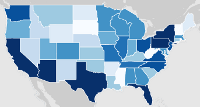

The State of Furry Extras
Along with data from the Furry Survey, I may occasionally wind up doing an extra visualization or two based on informal data from other locations, such as polls in forums or whatnot. This data may only show trends and should not be taken to be the gospel truth! Have fun with it, though!
|
|

States
|